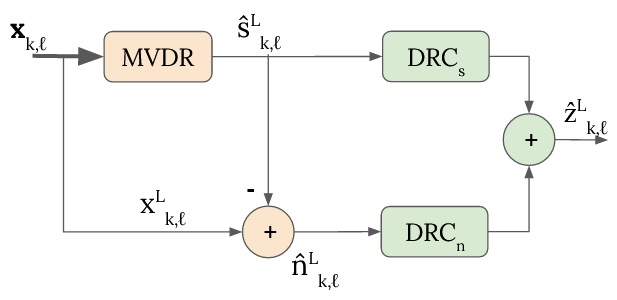
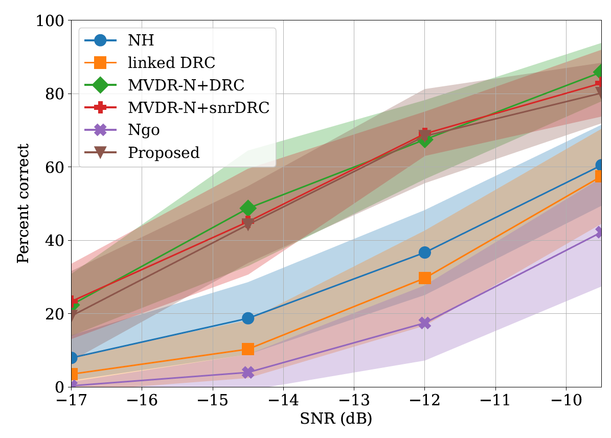
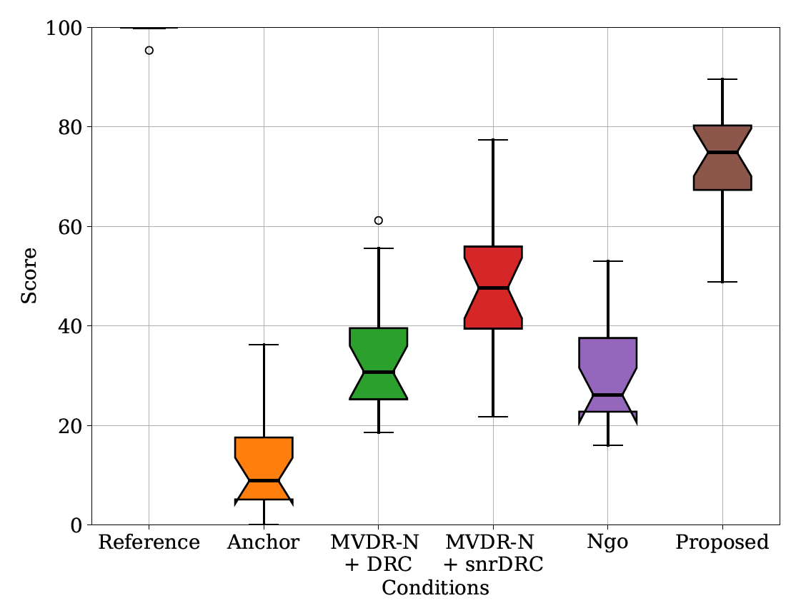

Adrien Llave Simon Leglaive
CentraleSupélec, IETR, France
submitted to the Journal of the Acoustical Society of America
Article | Audio examples | Bibtex | Acknowledgement
Abstract| Dynamic range compression and denoising algorithms are two key features of hearing aids, which aim to restore audibility and speech intelligibility, respectively. Yet, they have an opposite effect on the signal-to-noise ratio and distort the spatial perception of the auditory scene. Both algorithm are usually associated in series and designed independently so as to achieve a trade-off between their primary task (denoising or dynamic range reduction) and the preservation of the localization cues. This independent-design approach prevents finding an optimal compromise when considering the whole hearing-aid processing chain, which limits the global performance regarding speech audibility, intelligibility and preservation of the auditory scene. This work proposes to unify dynamic range compression and denoising within a same formalism based on solving an optimization problem, so as to address the aforementioned issues. A perceptual evaluation is conducted on normal-hearing listeners using a hearing loss simulator. The proposed method is compared to serial combinations of state-of-the-art beamformers and dynamic range compressors. This method obtains speech comprehension performance similar to the state-of-the-art while being considered by a large majority of the subjects as better preserving the rest of the auditory scene.  Binaural hearing aids processing block diagram of the proposed method. |  Word recognition percentage for different SNRs and the six tested conditions. The solid line represents the mean and the area the standard deviation.  MUSHRA preference test score for the six conditions. Each whisker box aggregates the means of the scores for each subject. |
TODO: You can listen to audio examples of a auditory scene composed of three speech sources located on the horizontal plane at -45, 0 and 45°, respectively, and a cafeteria noise at a SNR of 5 dB.
| Original speech | Original noise |
|---|---|
| Speech location @ azimuth: 0° | |
|---|---|
| Original | |
| MVDR beamformer | |
| LCMV beamformer | |
| Proposed beamformer |
The authors acknowledges the Région Bretagne for funding the HPPA (HRTF pour les prothèses auditives) FEDER project.